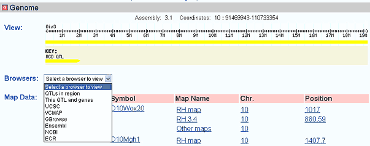
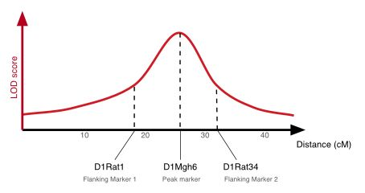
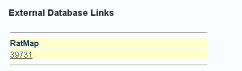
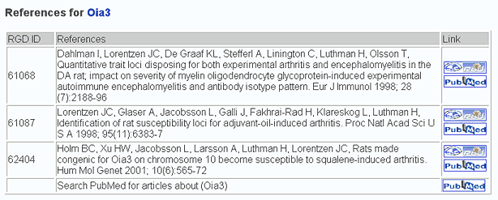
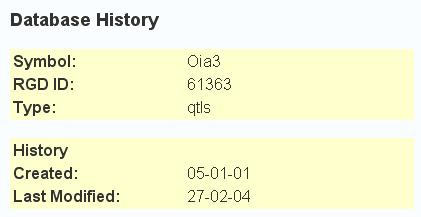

The approved QTL symbol. This may be different than the symbol used in the article, but all other symbols used for this QTL will be listed in the alias symbol section.
The approved full text name for the QTL
Symbols that have been used to refer to this QTL in the past
Names that have been used to refer to this QTL in the past
The measurable phenotype category that was studied in the mapping of the QTL. If multiple traits were reported in the article, only the trait with the highest statistical significance will be indicated.
Other significant traits will be described in the annotation section.
If applicable, a subcategory of the trait measured. For example, a QTL defined by measuring systolic blood pressure would have a Trait entry of Blood pressure and a subtrait of systolic. This allows a degree of categorization of QTLs and their traits. A more comprehensive controlled vocabulary is in development.
A summary of the protocol used to determine the trait/sub-trait.
The human disease associated with the phenotype measured. This is a controlled vocabulary term. Clicking on the term will hyperlink to the ontology browser.
A list of all the phenotypes measured. This is a controlled vocabulary term. Clicking on the term will hyperlink to the ontology browser.
A list of all the statistics reported in the article.
Summary map data related to the QTL, including the chromosome where it is found, the markers defining the ends of the QTL and the peak marker.
List of strains that were used to determine the QTL. The strain symbols are hyperlinked to a Strain report with more details about the strain..
An image of the QTL on its chromosome. The genome coordinates are also listed along with the assembly version.
A drop down box provides hyperlinks to various genome viewing tools. The hyperlink will enter the tool with the same chromosome and coordinates as the QTL report. See the drop-down box's choice of links below.

List the mapping information for the flanking and peak markers. The symbol will hyperlink to the marker's report page. The map name, chromosome, and position will hyperlink to the map viewing tool.
QTLs typically have up to three pieces of mapping information associated with them:
These are shown graphically in the example QTL diagram below:

Mapping information is shown for any or all of the flanking or peak markers that have been reported in the literature. If these markers are not present on a genetic or radiation hybrid map within RGD this is shown by the text "No mapping information available within RGD" even though these markers have obviously been mapped in the QTL study. If mapping data is available, it is linked to further information as shown below:
Curated annotations for phenotypes, disease, candidate genes, etc. are listed in this section
Contains hyperlinks to a report with all external database links and also hyperlinks directly to external databases where possible.
The new report page lists all available external database links. The new report page looks like the report below.

Links to a Reference summary report. The report contains a list of the reference's RGD ID, title, citation, and hyperlinks to the RGD reference report and the Pubmed reference report.
The QTL's reference report looks like the report below.

This section lists the RGD ID of the QTL and also has a hyperlink to the Nomenclature and Modification History report.
The QTL's Nomenclature and Modification History report looks like the report below.
